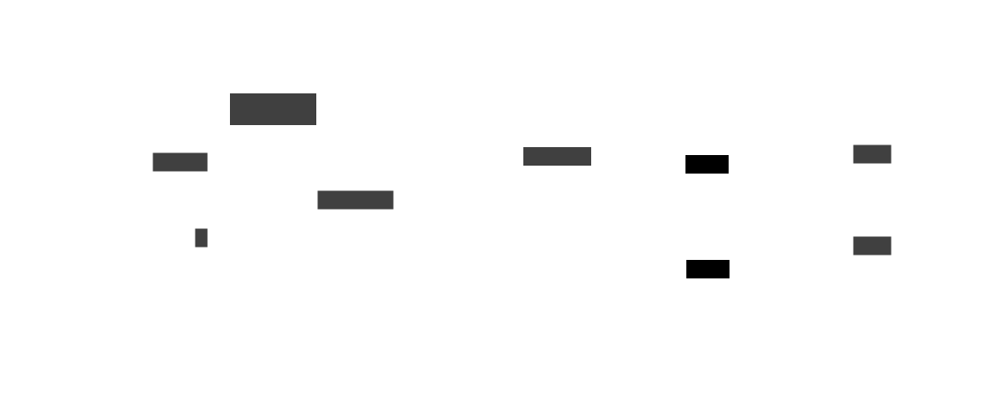
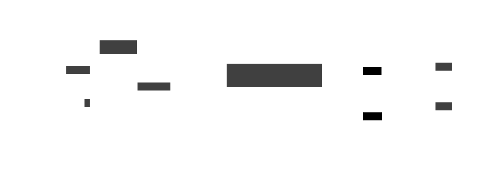

3 Service messaging
In OpenRFSense, NATS messaging (“NATS,” n.d.) is used to enable communication between the backend and the nodes. NATS (Neural Autonomic Transport System) is a lightweight messaging system that is commonly used for machine-to-machine (M2M) communication in IoT (Internet of Things) applications. A messaging system such as NATS is based on message delivery guarantees and optional message retention for later delivery. These capabilities ensure service message resiliency through high-latency connections and in-flight data loss.
The backend acts as the NATS server and the nodes act as NATS clients which connect to the server. When a node is powered on, it connects to the NATS server and subscribes to a , which is a named destination to which messages are published. The node can subscribe to one or more subjects depending on its capabilities. Some subjects currently being used for service messages are:
node.allfor node system metrics (see Section 3.1)node.all.aggregatedandnode.all.rawfor backend-to-node signal recording commands (see Section 3.2)node.$hardware_id.$command, where$hardware_idis the node’s unique identifier and$commandis a specific action being requested
3.1 Node metrics
The backend, when requested through the REST API or the web UI, sends a message to a specific NATS subject (to which all nodes are required to listen on). All nodes then start collecting internal metrics (such as CPU usage and temperature, memory usage etc.) and respond on the same subject with the collected data, encoded in JSON (JavaScript Object Notation) format (ECMA 2017).

3.1.1 Metrics contents
A metrics object contains useful system data such as:
- the system hostname
- a unique hardware ID derived from the motherboard model
- the motherboard/hardware model of the system
- the system’s online time (uptime) in milliseconds since it was powered on
Additionally, a variable-content section is reserved for less crucial information. This section is never required nor checked by the backend, but its data, if present, is shown to the user through the web UI. Currently, such data is provided by small standardized software modules (), which are called by the node management software if present. Some currently implemented providers are:
- node geographical location in GeoJSON (Butler et al. 2016) format
- filesystem usage
- memory (RAM) usage
- network connections
- current node availability (free, busy, handling errors, etc.)
3.1.2 Message encoding
As stated above, node metrics are encoded in JSON format to be easily accessible by external services, since JSON is a well-established industry standard data format. An example of the metrics data encoded in textual JSON is Listing 3.1.
Listing 3.1: example metrics object in JSON format
{
"id": "kgslnximugwhsfnwbjknwbv",
"hostname": "raspberry",
"model": "Raspberry Pi 3B",
"uptime": 186339250000000,
"providers": []
}3.2 Commands
The backend can also publish messages to node-specific subjects. This enables the backend to remotely control the nodes and send configuration updates or commands. The messages can be one of two types:
- empty messages sent on a specific NATS subject ()
- JSON-encoded messages containing relevant context for the requested action
When a node receives a remote command message, it processes the command and sends a response message back to the backend. The response message can contain any relevant information about the status of the command, such as success or failure, and any associated data. Generally, nodes send their system metrics as response but it is not a strict requirement.
